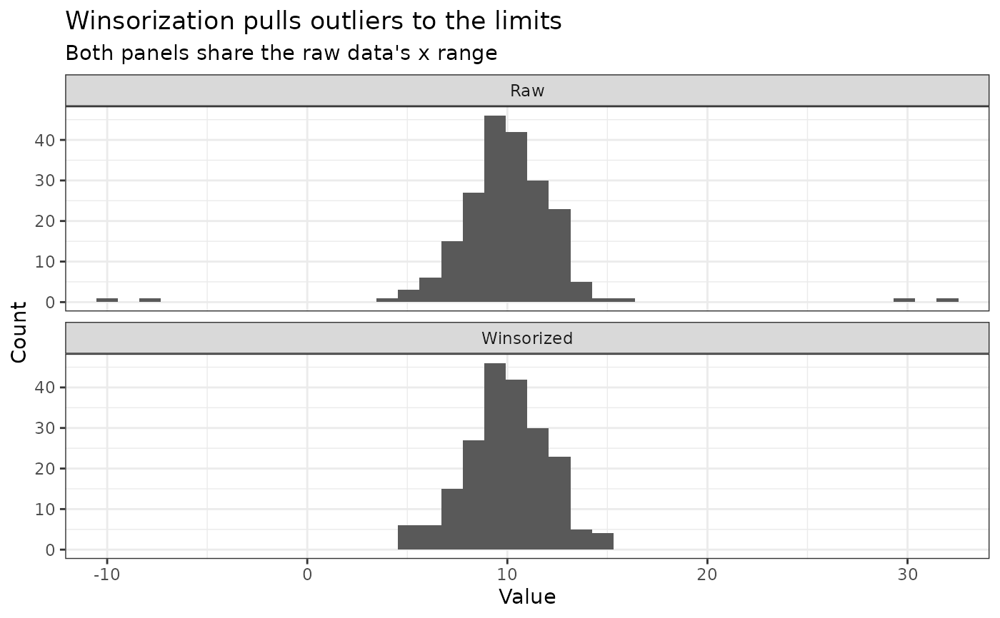

This function performs winsorization on a numeric vector by capping extreme values at calculated lower and upper thresholds. Thresholds can be based on either standard deviation (assuming approximate normality) or interquartile range (robust to skewed distributions).
Usage
windsorize(
data,
sdlim = 2.5,
iqrlim = 1.5,
method = "sd",
Data = lifecycle::deprecated()
)Arguments
- data
A numeric vector to be winsorized.
- sdlim
Numeric. Number of standard deviations for the "sd" method.
- iqrlim
Numeric. Multiplier for the IQR when method = "iqr" (default 1.5).
- method
Character string specifying the method: "sd" (default) or "iqr".
- Data
Deprecated (since 19.15.0). Use
datainstead.
Details
Winsorization replaces extreme values with the nearest threshold value rather than discarding them, limiting the influence of outliers while retaining the sample size. The term originates with the statistician Charles P. Winsor; see Dixon (1960) and Tukey (1962) for early treatments of the estimator.
References
Tukey, J. W. (1962). The future of data analysis. The Annals of Mathematical Statistics, 33(1), 1-67. doi:10.1214/aoms/1177704711
Dixon, W. J. (1960). Simplified estimation from censored normal samples. The Annals of Mathematical Statistics, 31(2), 385-391. doi:10.1214/aoms/1177705900
Examples
x <- c(rnorm(100), 10, 15, -12)
# SD-based winsorization
windsorize(x, method = "sd", sdlim = 2.5)
#> [1] 0.0968195374 0.4588994227 -0.8434092783 0.1949260009 0.3814395393
#> [6] -1.1214472931 0.5952928841 0.5489146231 -0.0828646888 -0.6385080477
#> [11] 0.6162607797 -2.6606591412 1.1698111541 -0.5854162953 -1.5007808580
#> [16] 0.8230885736 -0.1676762727 -2.3356750300 1.3292741055 -0.1602746149
#> [21] 2.1509256051 -0.9759003821 -0.8448510787 -1.0170626478 1.3793267548
#> [26] -0.2420102012 1.3800954600 0.4991264585 -0.9994087484 0.4280966897
#> [31] -0.8632281441 -0.3793070927 0.0505452560 0.0366660855 -0.7738859611
#> [36] 1.7725224343 -0.3566235590 -0.0140912392 -1.8822419905 -0.1261046205
#> [41] -0.4565938459 1.0356174827 -0.0297037624 1.6610913780 0.2169206438
#> [46] -0.0006072952 1.1305228606 -0.6878356064 -1.0938794120 0.5688288101
#> [51] -0.4970397064 -1.6687636438 -0.4382744890 0.5883581738 -0.6031577054
#> [56] 0.8200094909 0.2506613862 -1.1309857172 0.5082037473 -1.3209182314
#> [61] -0.4707902063 -0.6446786487 1.3174701681 -1.4125209598 0.8418432484
#> [66] -1.5668632907 -1.8916294382 -1.8821154209 1.3505177018 -0.0237826475
#> [71] 0.2994772470 0.0300292602 -0.3545861429 1.2182758796 -1.3866949801
#> [76] -0.3446927213 2.1961544341 1.4730082271 -0.1564961077 -3.0382515144
#> [81] 0.7997282147 -0.2117759552 0.0805471762 -1.2729235361 1.2762207793
#> [86] -0.9729867876 0.7794430123 -0.9927239884 -1.7994482393 0.0948182133
#> [91] 0.1748617077 -1.0354283710 -0.4499560481 -0.7541600329 -0.0802208439
#> [96] 0.6183656944 -1.7119516099 0.7613269130 -0.9408779229 0.4397209569
#> [101] 5.9431351839 5.9431351839 -5.9907213556
# IQR-based winsorization
windsorize(x, method = "iqr", iqrlim = 1.5)
#> [1] 0.0968195374 0.4588994227 -0.8434092783 0.1949260009 0.3814395393
#> [6] -1.1214472931 0.5952928841 0.5489146231 -0.0828646888 -0.6385080477
#> [11] 0.6162607797 -2.6606591412 1.1698111541 -0.5854162953 -1.5007808580
#> [16] 0.8230885736 -0.1676762727 -2.3356750300 1.3292741055 -0.1602746149
#> [21] 2.1509256051 -0.9759003821 -0.8448510787 -1.0170626478 1.3793267548
#> [26] -0.2420102012 1.3800954600 0.4991264585 -0.9994087484 0.4280966897
#> [31] -0.8632281441 -0.3793070927 0.0505452560 0.0366660855 -0.7738859611
#> [36] 1.7725224343 -0.3566235590 -0.0140912392 -1.8822419905 -0.1261046205
#> [41] -0.4565938459 1.0356174827 -0.0297037624 1.6610913780 0.2169206438
#> [46] -0.0006072952 1.1305228606 -0.6878356064 -1.0938794120 0.5688288101
#> [51] -0.4970397064 -1.6687636438 -0.4382744890 0.5883581738 -0.6031577054
#> [56] 0.8200094909 0.2506613862 -1.1309857172 0.5082037473 -1.3209182314
#> [61] -0.4707902063 -0.6446786487 1.3174701681 -1.4125209598 0.8418432484
#> [66] -1.5668632907 -1.8916294382 -1.8821154209 1.3505177018 -0.0237826475
#> [71] 0.2994772470 0.0300292602 -0.3545861429 1.2182758796 -1.3866949801
#> [76] -0.3446927213 2.1961544341 1.4730082271 -0.1564961077 -3.0382515144
#> [81] 0.7997282147 -0.2117759552 0.0805471762 -1.2729235361 1.2762207793
#> [86] -0.9729867876 0.7794430123 -0.9927239884 -1.7994482393 0.0948182133
#> [91] 0.1748617077 -1.0354283710 -0.4499560481 -0.7541600329 -0.0802208439
#> [96] 0.6183656944 -1.7119516099 0.7613269130 -0.9408779229 0.4397209569
#> [101] 2.8326433726 2.8326433726 -3.1428708771
# Compare the distribution before and after winsorization. Both panels are
# drawn on the raw data's x range, because free scales would rescale the
# winsorized panel to its own narrower range and hide the very thing being
# demonstrated.
set.seed(42)
x <- c(rnorm(200, mean = 10, sd = 2), 30, 32, -8, -10)
compare_df <- data.frame(
raw = x,
winsorized = windsorize(x, method = "iqr", iqrlim = 1.5)
)
df_Compare <- tidyr::pivot_longer(
compare_df,
cols = dplyr::everything(),
names_to = "Version",
values_to = "Value"
)
df_Compare$Version <- factor(
df_Compare$Version,
levels = c("raw", "winsorized"),
labels = c("Raw", "Winsorized")
)
ggplot2::ggplot(df_Compare, ggplot2::aes(x = Value)) +
ggplot2::geom_histogram(bins = 40, na.rm = TRUE) +
ggplot2::facet_wrap(~ Version, ncol = 1) +
ggplot2::coord_cartesian(xlim = range(compare_df$raw, na.rm = TRUE)) +
ggplot2::labs(
title = "Winsorization pulls outliers to the limits",
subtitle = "Both panels share the raw data's x range",
x = "Value", y = "Count"
) +
ggplot2::theme_bw()

# The four extreme values are gone from the tails and have reappeared as
# taller bars at the winsorized limits; nothing was dropped.
range(compare_df$raw)
#> [1] -10 32
range(compare_df$winsorized)
#> [1] 4.985675 15.049195
length(compare_df$raw) == length(compare_df$winsorized)
#> [1] TRUE